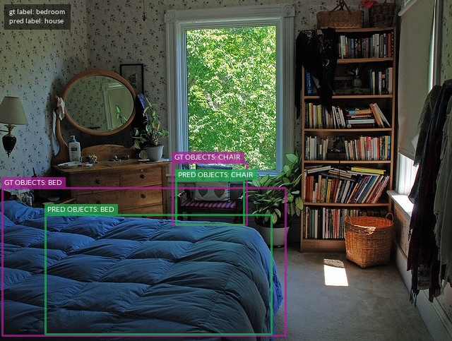
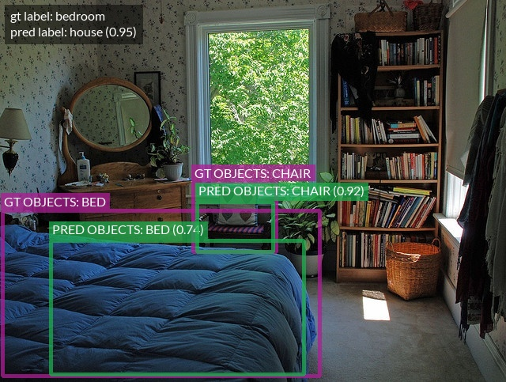

Drawing Labels on Samples ¶¶
FiftyOne provides native support for rendering annotated versions of image and video samples with label fields overlaid on the source media.
Basic recipe ¶¶
The interface for drawing labels on samples is exposed via the Python library
and the CLI. You can easily annotate one or more
label fields on entire datasets or arbitrary subsets of
your datasets that you have identified by constructing a DatasetView.
Examples ¶¶
Drawing labels on images ¶¶
The following snippet renders the ground truth and predicted labels on a few samples from the quickstart dataset:
import fiftyone as fo
import fiftyone.zoo as foz
dataset = foz.load_zoo_dataset("quickstart", max_samples=10)
anno_image_paths = dataset.draw_labels(
"/tmp/quickstart/draw-labels",
label_fields=None, # all label fields
# label_fields=["predictions"], # only predictions
)
print(anno_image_paths)
Drawing labels on videos ¶¶
The following snippet renders both sample-level and frame-level labels on a few videos from the quickstart-video dataset:
import fiftyone as fo
import fiftyone.zoo as foz
dataset = foz.load_zoo_dataset("quickstart-video", max_samples=2).clone()
# Add some temporal detections
sample1 = dataset.first()
sample1["events"] = fo.TemporalDetections(
detections=[\
fo.TemporalDetection(label="first", support=[31, 60]),\
fo.TemporalDetection(label="second", support=[90, 120]),\
]
)
sample1.save()
sample2 = dataset.last()
sample2["events"] = fo.TemporalDetections(
detections=[\
fo.TemporalDetection(label="first", support=[16, 45]),\
fo.TemporalDetection(label="second", support=[75, 104]),\
]
)
sample2.save()
anno_video_paths = dataset.draw_labels(
"/tmp/quickstart-video/draw-labels",
label_fields=None, # all sample and frame labels
# label_fields=["events"], # only sample-level labels
# label_fields=["frames.detections"], # only frame-level labels
)
print(anno_video_paths)
Individual samples ¶¶
You can also render annotated versions of individual samples directly by using
the various methods exposed in the fiftyone.utils.annotations module.
For example, you can render an annotated version of an image sample with
Classification and Detections labels overlaid via
draw_labeled_image():
import fiftyone as fo
import fiftyone.utils.annotations as foua
# Example data
sample = fo.Sample(
filepath="~/fiftyone/coco-2017/validation/data/000000000632.jpg",
gt_label=fo.Classification(label="bedroom"),
pred_label=fo.Classification(label="house", confidence=0.95),
gt_objects=fo.Detections(
detections=[\
fo.Detection(\
label="bed",\
bounding_box=[0.00510938, 0.55248447, 0.62692188, 0.43115942],\
),\
fo.Detection(\
label="chair",\
bounding_box=[0.38253125, 0.47712215, 0.16362500, 0.18155280],\
),\
]
),
pred_objects=fo.Detections(
detections=[\
fo.Detection(\
label="bed",\
bounding_box=[0.10, 0.63, 0.50, 0.35],\
confidence=0.74,\
),\
fo.Detection(\
label="chair",\
bounding_box=[0.39, 0.53, 0.15, 0.13],\
confidence=0.92,\
),\
]
),
)
# The path to write the annotated image
outpath = "/path/for/image-annotated.jpg"
# Render the annotated image
foua.draw_labeled_image(sample, outpath)

Similarly, you can draw an annotated version of a video sample with its frame
labels overlaid via
draw_labeled_video().
Customizing label rendering ¶¶
You can customize the look-and-feel of the labels rendered by FiftyOne by
providing a custom DrawConfig
to the relevant drawing method, such as
SampleCollection.draw_labels()
or the underlying methods in the fiftyone.utils.annotations module.
Consult the DrawConfig docs
for a complete description of the available parameters.
For example, the snippet below increases the font size and line thickness of the labels in the example above and includes the confidence of the predictions:
# Continuing from example above...
# Customize annotation rendering
config = foua.DrawConfig(
{
"font_size": 24,
"bbox_linewidth": 5,
"show_all_confidences": True,
"per_object_label_colors": False,
}
)
# Render the annotated image
foua.draw_labeled_image(sample, outpath, config=config)
